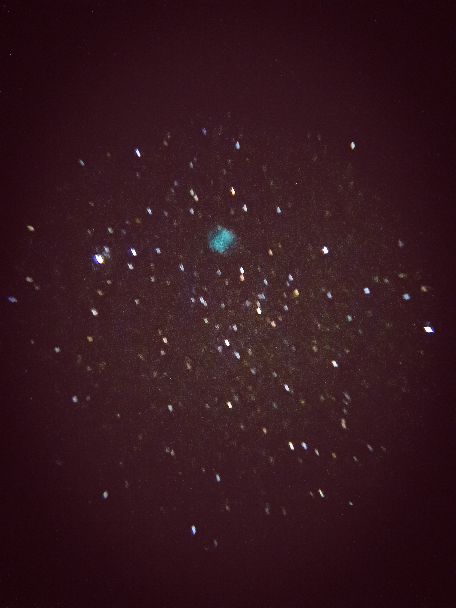
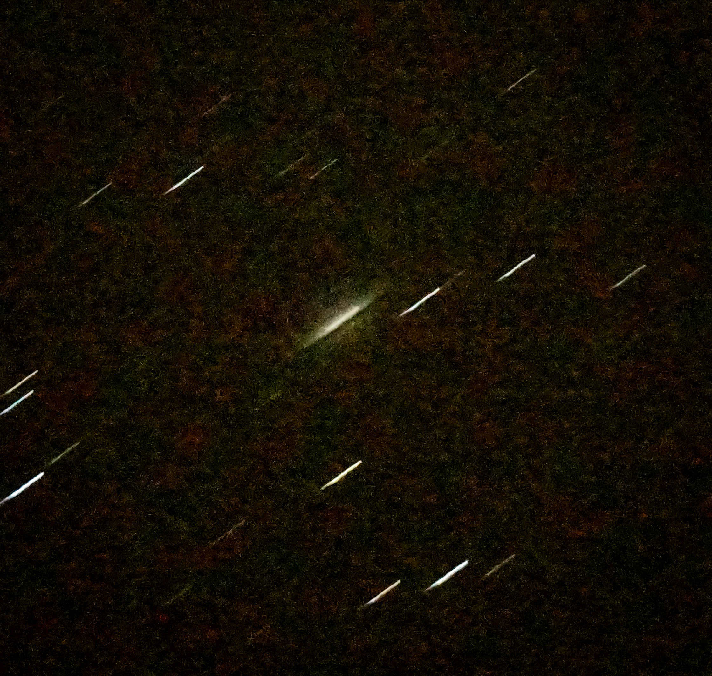
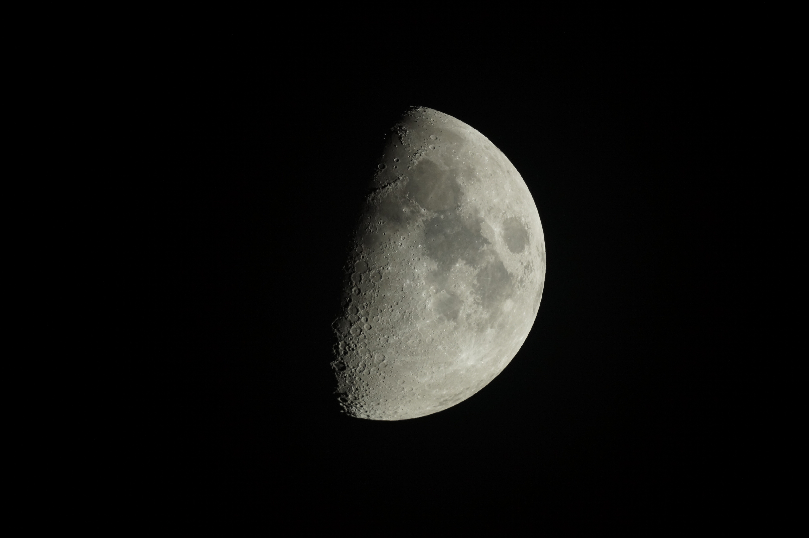
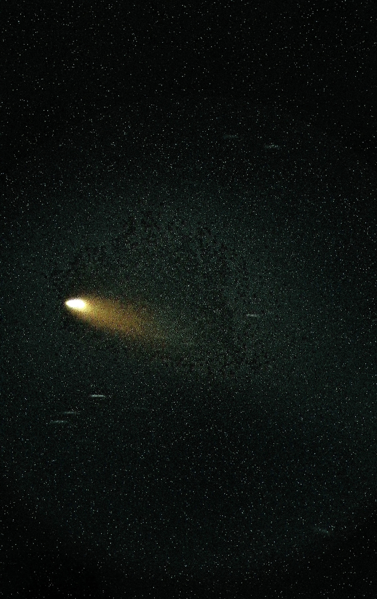
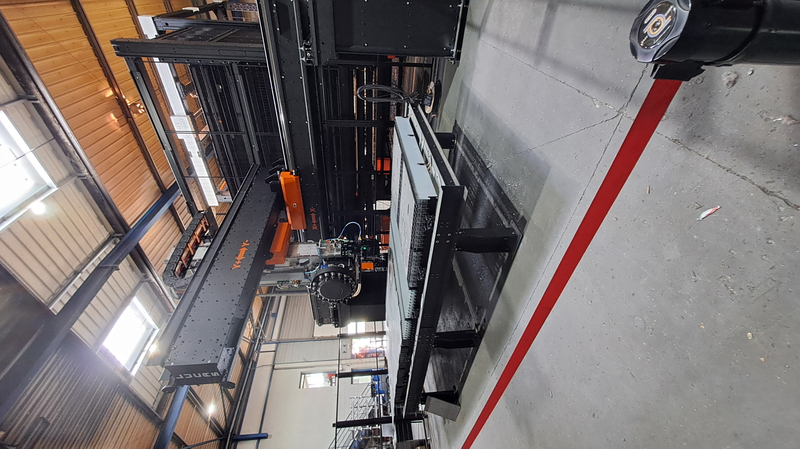

Astronomie & Astrophotographie
Passionné d'astronomie, je pratique l'observation et l'astrophotographie depuis plus de 5 ans et demi. Cette pratique m'a permis de développer une expertise particulière dans l'imagerie du ciel profond et l'observation des phénomènes célestes. Je combine à la fois l'observation visuelle pour explorer les merveilles du cosmos et la photographie astronomique pour capturer des images détaillées des objets du ciel profond, des nébuleuses aux galaxies lointaines.
Mes Observations
Voici quelques-unes de mes captures du ciel :





Projet Upérion - Modélisation de Mini-Fusée
Le projet Upérion est un projet personnel ambitieux mêlant sciences physiques, ingénierie et programmation. J'ai conçu et modélisé une mini-fusée pour explorer mes passions scientifiques et techniques. L'objectif principal était de créer un modèle réaliste et fonctionnel, puis de simuler son vol pour prédire ses performances et optimiser sa trajectoire. Ce projet m'a permis de développer mes compétences en CAO, simulation physique, et programmation, en affrontant des défis techniques complexes et en apprenant de façon autonome.
Modélisation 3D
Conception complète de la fusée avec attention aux détails aérodynamiques et structurels. Utilisation du logiciel Fusion 360 pour créer un modèle réaliste et fonctionnel.


Simulation Unity
Développement d'une simulation de lancement sur Unity pour tester les performances théoriques de la fusée. La simulation intègre la physique réaliste du vol et permet de visualiser la trajectoire et< le comportement de la fusée.


Vidéo de la Simulation
Stage en Entreprise - Lucas à Bazas
J'ai effectué mon stage au sein de l'entreprise Lucas à Bazas, spécialisée dans la conception et la fabrication d'axes numériques et de robots cartésiens de grande taille pour l'automatisation industrielles. Cette expérience m'a permis de découvrir le monde professionnel et d'appliquer mes connaissances théoriques dans un contexte réel.
Durant ce stage, j'ai eu l'occasion d'utiliser des logiciels de CAO professionnels tels qu'AutoCAD et LibreCAD. J'ai pu dessiner des pièces mécaniques et comprendre les contraintes techniques de la production industrielle. Cette immersion m'a également permis d'observer le processus complet de fabrication, de la conception à la réalisation.
J'ai particulièrement apprécié l'accompagnement des équipes qui m'ont transmis leur expertise , pour certain leur ambition et leur rigueur dans le travail. Cette expérience a renforcé mon intérêt pour les sciences de l'ingénieur et la conception technique.


